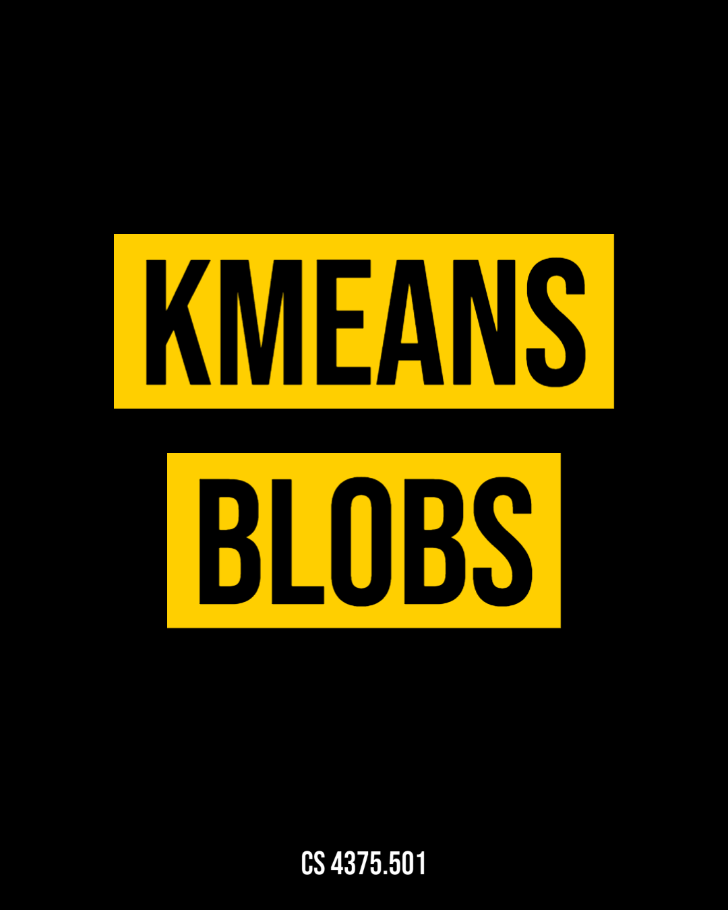
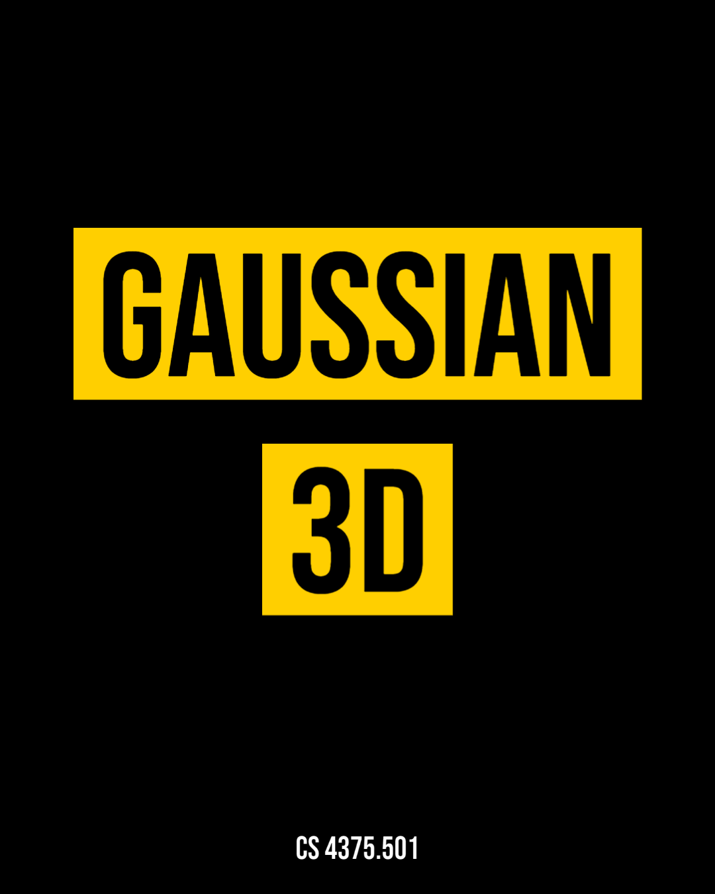
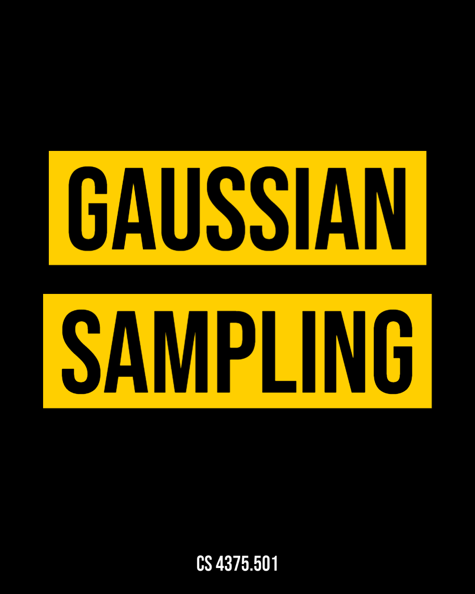
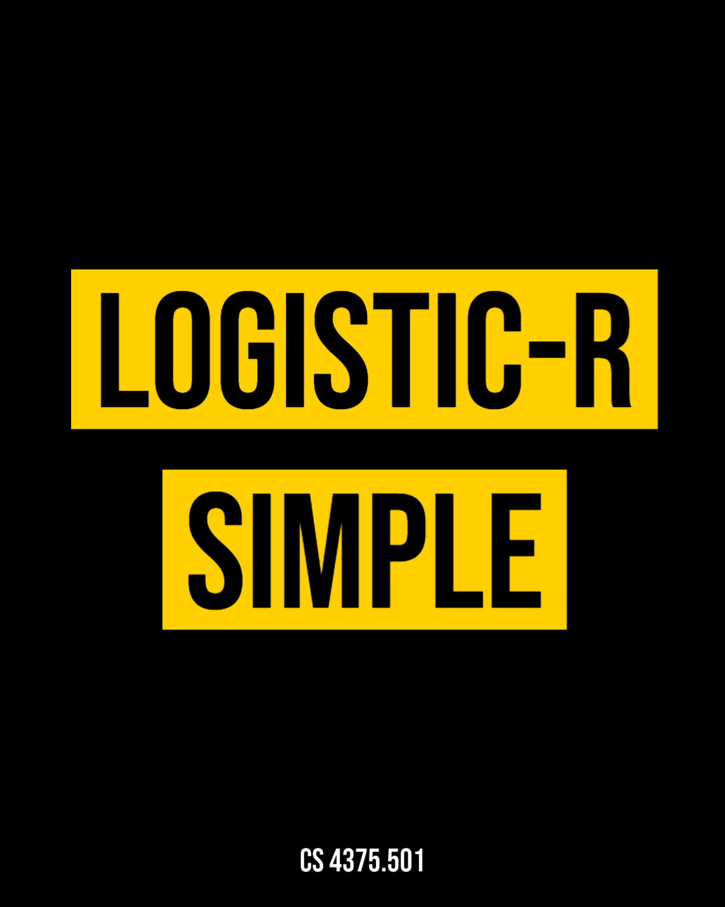

CS 4375.501 | Machine Learning Models

LR-Direct
The Linear Regression script using the direct method, and hours as input and grades as response.

LR-Direct-Polynomial
The Linear Regression script using the direct method and a polynomial model.

KMeans-Blobs
The K-Means method applied on 2D Blob-points.

Gaussian-3D
The plot of Gaussian densities: 3D and level sets.

Gaussian-Sampling
Sampling from a Gaussian density.

LogisticR-Simple
Logistic Regression method applied on the Social Networks Ads dataset.